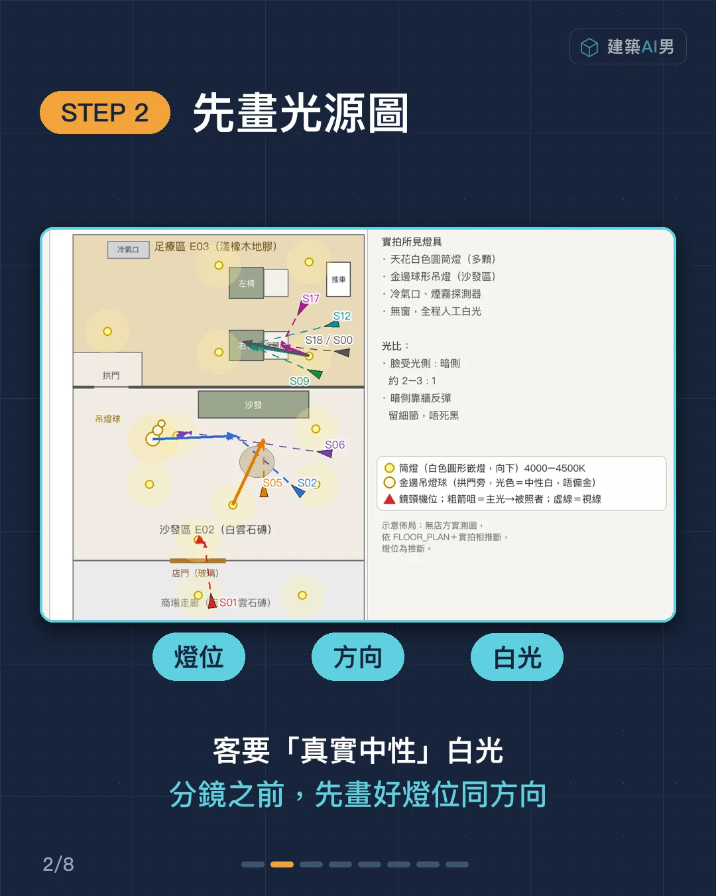
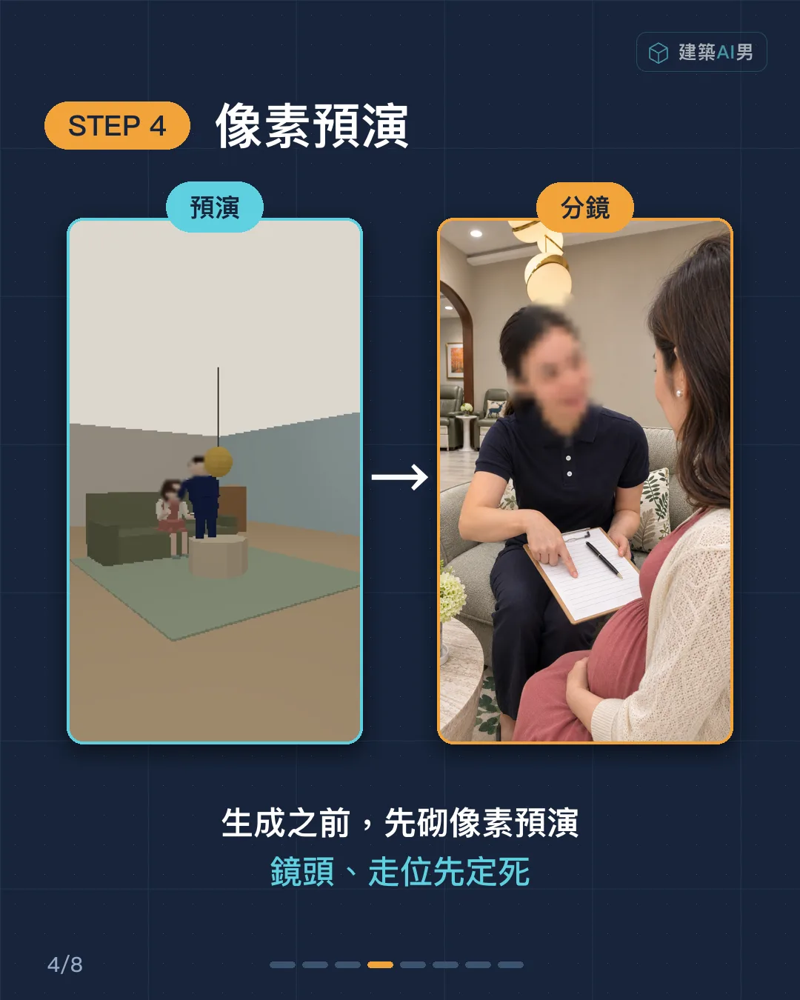
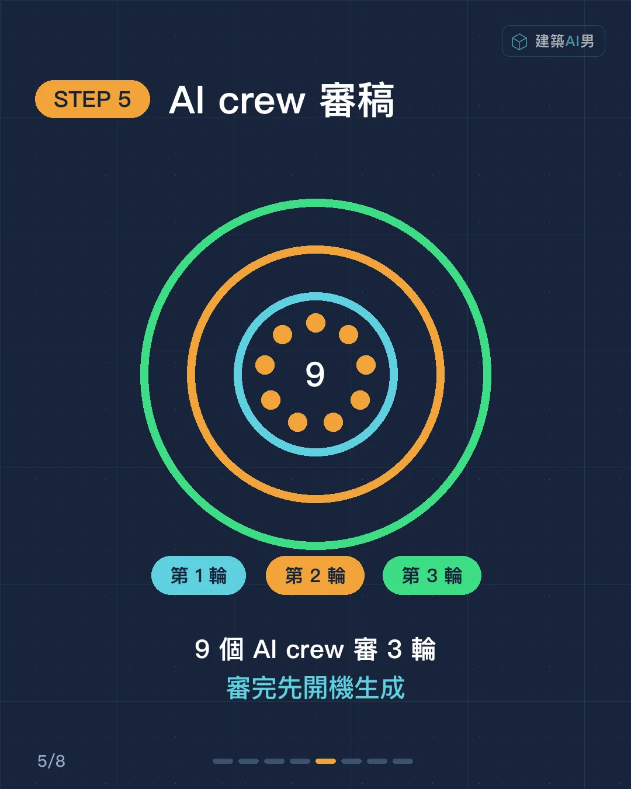

1
劇本：1 分鐘 → 30 秒精華版
- 先寫晒完整劇本，再揀最重要嘅鏡頭。
- 額度唔夠，就唔好硬塞；精華版寧願少鏡、每鏡講得清楚。
2
分鏡之前，先畫光源圖
- 客要「真實中性」白光，即係貼近店舖實拍嗰種白光，唔要暖粉色。
- 先畫一張平面圖：燈喺邊、照向邊、每個鏡頭主光從邊度嚟。
- 之後畫分鏡、寫提示詞，全部跟呢張圖。

3
分鏡圖逐格定鏡頭
- 每個鏡頭一張圖，構圖、人物位置、光源方向一齊定。
- 呢條片最後用 9 個鏡頭。
4
像素預演
- 用簡單方塊人同場景砌一次預演片，鏡頭運動、走位、節奏先睇清楚。
- 預演過咗先生成，減少「抽卡」浪費額度。

5
9 個 AI crew 審 3 輪
- 導演、光影、角色、表演、剪接等唔同角色嘅 AI，各自審一次。
- 審咗 3 輪，冇問題先開機生成。

6
拆 2 段 × 15 秒生成
- 30 秒分 A、B 兩段，每段 15 秒，兩段一共用 480 點。
- 每段生成完即刻睇，唔啱先決定點補，唔好一次過燒晒額度。
v5
改版：v1 → v5
客睇完 v1 畀咗意見，我逐條改：
- 片頭太短睇唔明 → 加長到約 3 秒。
- 刪走一張字卡。
- 加一句店長對白。
改到 v5，客先收貨。
一句講晒
拍片同起樓一樣：先畫圖，後開工。
想要我用嚟審稿嘅清單同提示詞範本？喺 FB／IG 留言「品牌片」，我私訊畀你。
常見問題
要識寫程式嗎？
唔使。成個流程係畫圖、整預演片、放入 AI 影片工具生成，再做剪接。
點解要先做像素預演？
因為鏡頭、走位、節奏喺預演入面改最平；預演過咗先生成，可以減少抽卡浪費額度。
30 秒品牌片用咗幾多點數？
今次分 A、B 兩段各 15 秒生成，兩段一共用 480 點。點數按你用嘅方案而定。
客改片點算？
逐條改：今次片頭加長到約 3 秒、刪走一張字卡、加一句店長對白，由 v1 改到 v5 客先收貨。